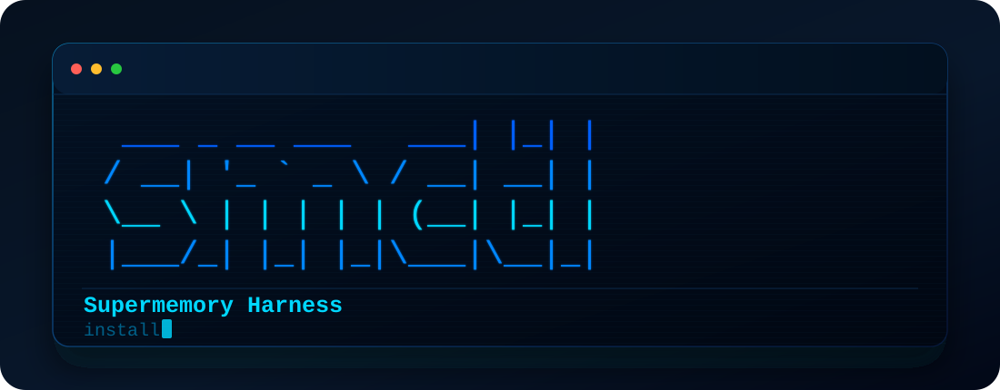

First install
# Install the CLI
npm install -g supermemory-harness
# Activate the Harness workflow
smctl installUse this after Supermemory Local is installed on the same machine.

smctl from then on.Harness is distributed through npm. After the global install, users do not need to copy a GitHub URL again.
# Install the CLI
npm install -g supermemory-harness
# Activate the Harness workflow
smctl installUse this after Supermemory Local is installed on the same machine.
smctl supermemory start
smctl ui
smctl verify --timeout-ms 60000
smctl trust --probe
smctl gateFor one-off usage without a global install: npx -y supermemory-harness install.
The screenshots show the actual local workflow: install, dashboard, recall proof, trust checks, repair guidance, and personalization.
smctl install checks Local state, project scope, dashboard readiness, agent bridge setup, and the next safe command.

smctl ui keeps the Supermemory dashboard visible while adding Harness status and next-action controls.

smctl verify writes a harmless marker, waits for processing, searches it back, and checks project scoping.

The repair wizard turns failures into safe ordered steps, while Memory Genome adapts memory behavior to what the user stores.

Supermemory Local remains the private memory engine at localhost:6767. Harness adds the operational layer that makes that engine easier to recommend to users and agents.
Agents should not blindly trust memory. Harness gives them checks before edits, tests, migrations, compaction, or handoff.
Local memory becomes much more useful when users can see whether it is healthy, scoped, searchable, and safe to rely on.